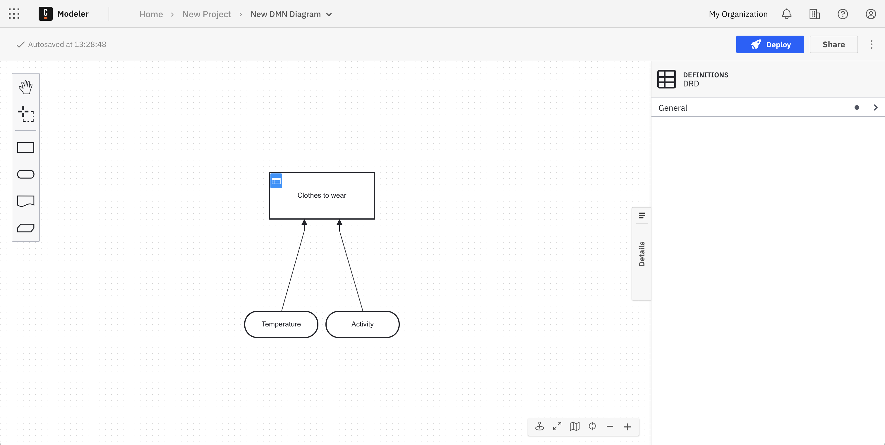
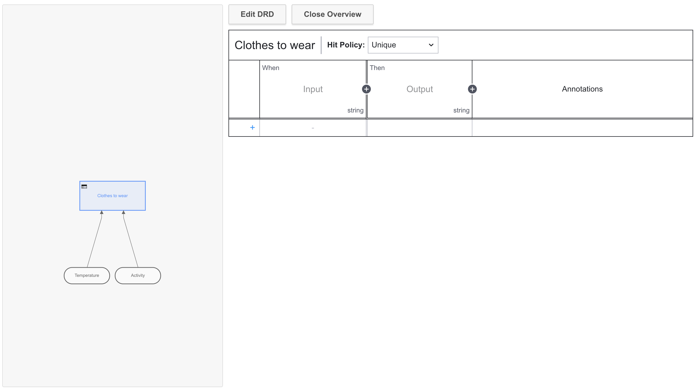
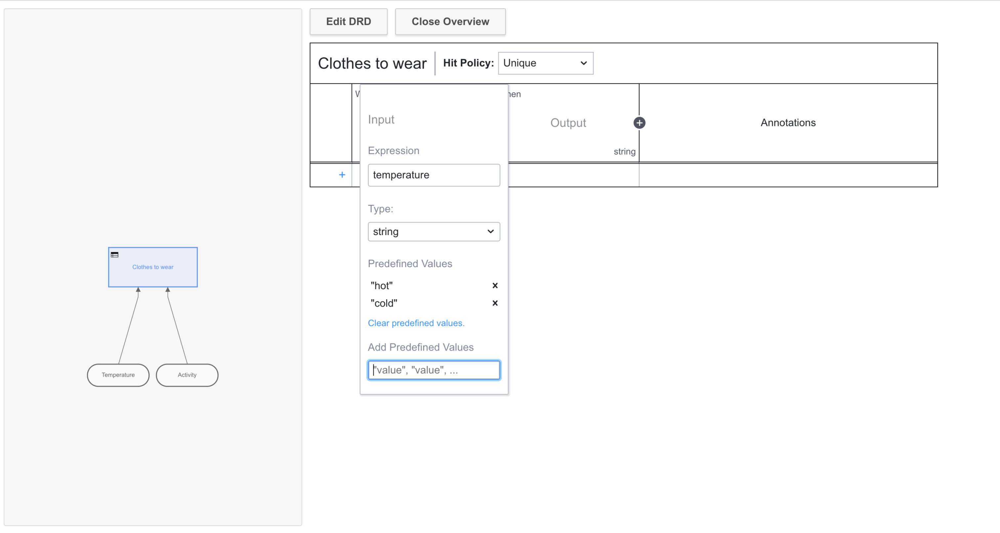
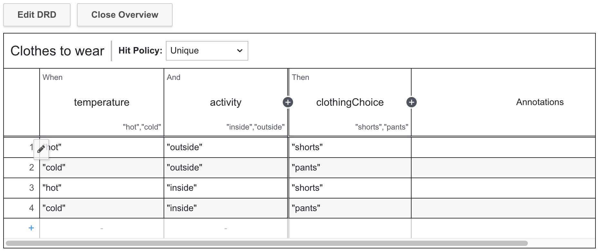

Create decision tables using DMN
Decision Model and Notation (DMN) is a modeling approach owned by an institution called the Object Management Group (OMG), which also operates worldwide standards for BPMN.
In DMN, decisions are modeled and executed using a language both business analysts and developers can understand. Model a set of rules within a table, and this will yield a decision to rapidly execute a process using a decision engine like Camunda.
In this guide, we'll step through the lightweight implementation of a DMN diagram in Camunda 8, as both Camunda Desktop and Web Modeler both offer the same modeling experience for DMN 1.3 models.
Set up
Create a Camunda 8 account
We'll begin building our DMN diagrams with Modeler. To get started, ensure you've created a Camunda 8 account.
Create a cluster
To deploy and run your process, you must create a cluster in Camunda 8.
- To create a cluster, navigate to Console by clicking the square-shaped icon labeled Camunda components in the top left corner, and click Console.
- Click the Clusters tab, and click Create new cluster.
- Name your cluster. For the purpose of this guide, we recommend using the Stable channel and the latest generation. Additionally, select your region. Click Create cluster.
- Your cluster will take a few moments to create. Check the status on the Clusters page or by clicking into the cluster itself and looking at the Applications section.
Even while the cluster shows a status Creating, you can still proceed to begin modeling.
Zeebe must show a status of Healthy to properly deploy your model.
Development clusters
Starter plan users have one development cluster, with free execution for development, included in their plan. Deployment and execution of models (process instances, decision instances, and task users) is provided at no cost. Additional clusters can be purchased through your billing reservations.
Visit the clusters page to learn more about the differences between development clusters and production clusters.
Getting started with DMN
Once logged in to your Camunda 8 account, take the following steps:
- From Modeler, click New project and name your project. For this example, we'll name our project "Deciding what to wear".
- Click Create new > DMN Diagram and name your diagram. We'll name our diagram "Picking an outfit".
DMN in action
Modeling starts here in the Decision Requirements Diagram (DRD) view. From here, we can add DMN elements from the palette on the left side by dragging and dropping them onto the diagram canvas.
- We're automatically set up with a rectangular decision symbol, which we'll rename to "Clothes to wear" by double-clicking on the symbol. We'll also rename the ID in the properties panel to "clothingChoice" by clicking the General dropdown menu.
- In this example, we'll append two input data which may determine what we wear for the day: the temperature, and the activity. You can do this in one of two ways:
- Drag and drop the oval-shaped input data elements from the menu on the left side of the DRD, name them, and connect them by clicking the decision and the arrow icon.
- Click the decision directly, and click the input data element to drag and drop it onto the canvas. With the second option, you can see this input data will automatically be connected to the decision.
- Ensure you have also given appropriate IDs to the input data icons. In this example, our IDs are "temperature" and "activity".

Now that you've created a decision, add some logic to make it executable by morphing it into a decision table in the next section.
Create your DMN table
Now that our DRD is complete, let's build out the DMN table for our decision.
- Click the table icon in the top left corner of the box containing our "Clothes to wear" decision. Here, we'll give a set of rules among weather and the activity to determine what we wear. For example, when a certain value is true (or in this case, when two values are true among the weather and the activity), then one outcome is determined for clothes to wear.

noteAt any time, you can click Edit DRD to return to your DRD and continue moving elements around on the palette.
- Click the + icon next to the When column so we can analyze both the weather and the activity.
- Double-click the first column. In the Expression field, we'll enter "temperature". Given the Type will remain string, we'll enter "Hot" and "Cold" in the Add Predefined Values field, separated by commas. Click your keyboards "enter" key to save these values.
note
Utilizing a data type other than a string? Take a look at our documentation on different data types, like booleans and numbers.
- Similar to the first column, enter "activity" for the expression and predefined values of "inside" and "outside".

- Double-click the Output column. Here, we'll plug in an Output Name of "clothingChoice", and Predefined Values of "shorts" and "pants".
- Once finished, we'll click the pencil icon to write out our possible outcomes. For example, we can select the predefined values of "hot" and "outside" to determine we will wear shorts. These inputs can also be combined with rules.

A decision table has a hit policy that specifies what the results of the evaluation of a decision table consist of. You'll notice the hit policy of our table is Unique, meaning only one rule can be satisfied or no rule at all. Learn more about different hit policies.
Deploy your diagram
Click Deploy to launch your DMN decision table.
You can now implement your DMN table in a BPMN diagram using features like a business rule task.
When a process instance arrives at a business rule task, a decision is evaluated using the internal DMN decision engine. Once the decision is made, the process instance continues.
If the decision evaluation is unsuccessful, an incident is raised at the business rule task. When the incident is resolved, the decision is evaluated again.